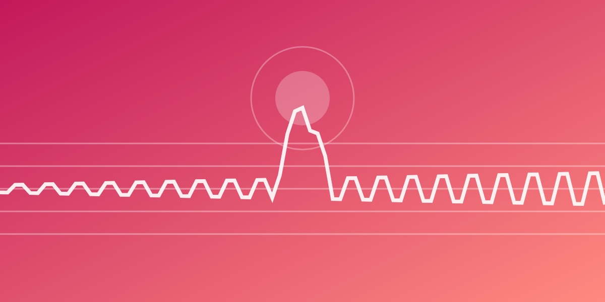

言葉にならない感動は、脳の予測が「ほどよく」裏切られ、それが身体で感じられたときに生まれる。
音楽を聴くとき、脳は常に次の音を予測しています。その予測は「どれだけ驚いたか（予測のズレ）」と「どれだけ見当がつかないか（不確実性）」の2つの軸で整理できます。
見当がついているのに驚かされる、あるいははっきり予測どおりに進む。そうした「はっきりした」状態で、音楽は美しく感じられやすくなります。そしてその感覚は、心臓やお腹といった身体の特定の場所に現れます。
感動とは、予測する脳、感じて動く身体、意味づける心が、ゆらぐ音の流れとやりとりする中で生まれる身体的な体験です。最新刊『言葉にならない感動を科学する』では、この仕組みを一般向けにまとめました。